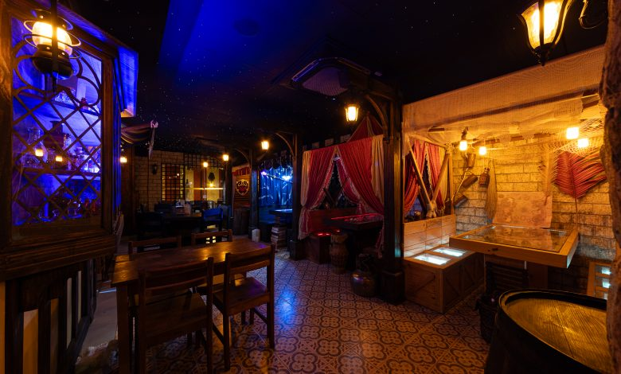

Saudações, nobres viajantes!
Bem-vindos ao Rei do Sabor, onde cada prato é um tesouro e cada refeição, um banquete real. Em nosso reino, a culinária é uma arte antiga, passada por gerações de mestres-cucas. Usamos apenas os ingredientes mais frescos de nossas terras para forjar sabores dignos de reis e rainhas.
Nossos Edictos Reais
- Ingredientes de Nosso Reino: Colheitas e carnes frescas, provindas de produtores locais leais à coroa.
- Um Festim para Toda a Corte: Nosso salão é o local perfeito para reunir seu séquito em um ambiente grandioso e acolhedor.
- Entrega por Nossos Ágeis Mensageiros: Receba seu banquete no conforto de seu castelo, com rapidez e eficiência.